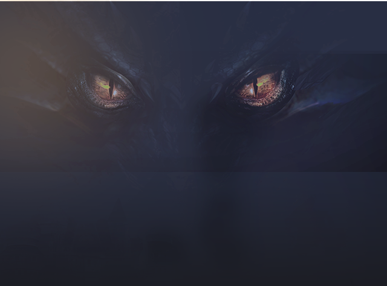

裂隙“大局观”，小白必看
2017-04-05
裂隙的攻略很多，本文专为刚打裂隙或者还没打裂隙的玩家准备，因为我刚玩裂隙时的很多疑问，在其他攻略贴里都没看到，故写此小白攻略。
本文不讲方向选择的规律，只说些其他帖子基本都没提过所谓“大局观”（也就是不打据点可以走11个角落），只要玩几次都会懂，但是其实新人是最需要懂这个的，而几乎没帖子说。
游戏版本：楼主是IOS2.5.18。
本帖针对人员：没过图11没有圣物的新手。
阵容：双奶（教皇大天使），三吸血（狼人，恶魔大君，夜魔），加暗黑魔导，天赋成就越高越好这里多说一句，没有6月亮，别去裂隙了，浪费火炬。
掉落：
1层：20尸尘；2层：道具师所需碎（魔盒碎片）；3层：魔法骑士所需碎片（笛子碎片）；4层：掠夺者所需碎片（大剑碎片）；5/6层：电晶石，可招魔像，可献祭。注意都只是概率出，不是必出（当大剑不出时，你的内心一定是“万马奔腾”的）。
1层：20尸尘；2层：道具师所需碎（魔盒碎片）；3层：魔法骑士所需碎片（笛子碎片）；4层：掠夺者所需碎片（大剑碎片）；5/6层：电晶石，可招魔像，可献祭。注意都只是概率出，不是必出（当大剑不出时，你的内心一定是“万马奔腾”的）。
打法及目的：不打据点，不下5层。